레이더 개발 이야기 번외편) - SLBM과 천문 항법 이야기
게시: 2023-06-15T06:30:13+09:00
<이젠 별 볼 필요가 없다?> 1960년대까지만 해도 폭격기는 물론 보잉 747 같은 민항기에서도 조종석 꼭대기에 sextant port(육분의 구멍)이 있어서 그걸로 별을 보고 현재 위치를 계산. 공군 혹은 해군 사관학교를 나왔는데 육분의 사용법을 모르는 것은 동네 창피한 이야기.
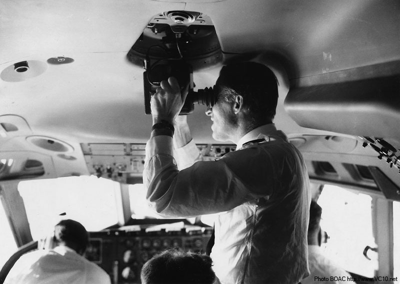
(1960년대 보잉 747 조종석의 sextant port)
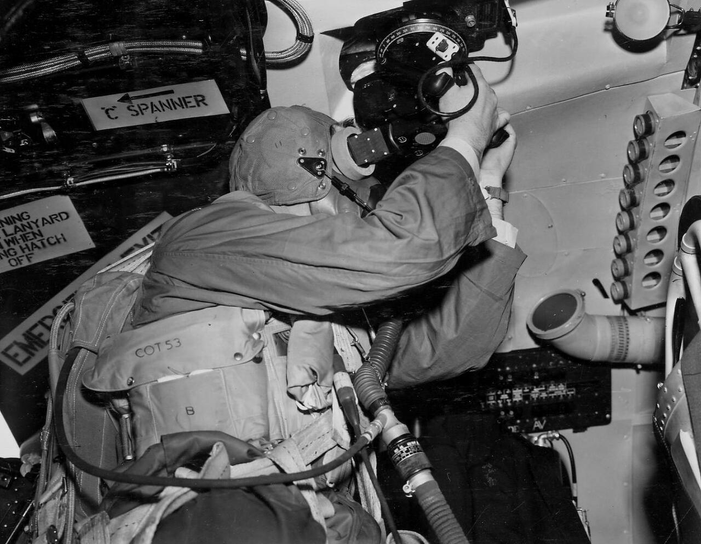
(1959년, 영국 폭격기 Victor의 Mk2C sextant 사용 모습)
그러나 1998년부터 미해군 사관학교에서는 더 이상 celestial navigation을 가르치지 않음. 이유는 너무 어려운 과목인데 어차피 위성 항법 시대라는 것. 실제로 non-engineering 과목 중에서 가장 어렵다는 불평불만이 많았음. 대부분의 장교들은 평생 단 한번도 써보지 않을 기술을 익히는데 너무 많은 시간을 보내게 되므로, 차라리 그 시간에 다른 것을 배우는 것이 더 효율적이긴 함.
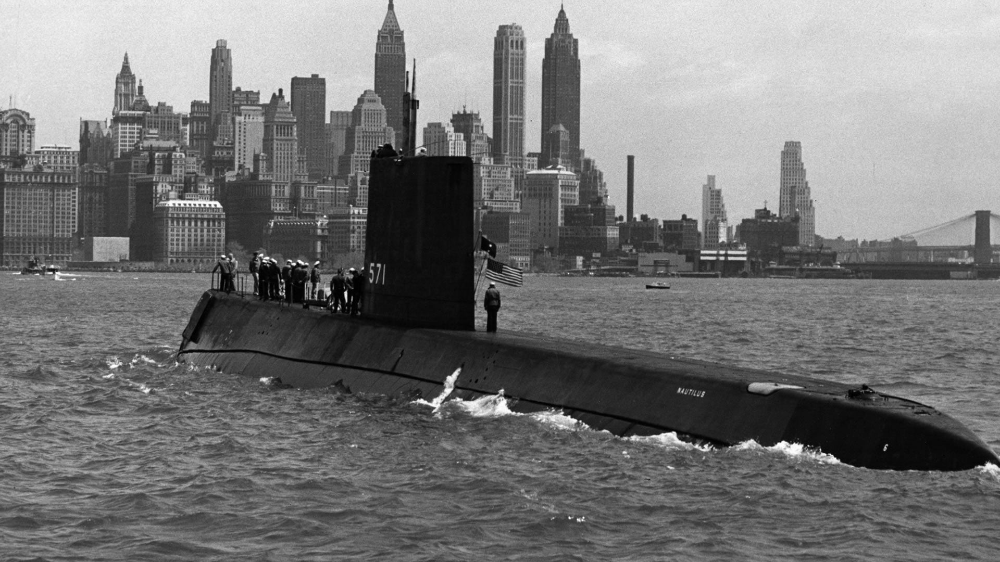
(1954년 취역한 세계 최초의 핵잠수함 USS Nautilus. 때가 50년대였으므로 하늘에 인공위성 하나 안 떠있었고, 당연히 GPS에 의한 항법은 불가능. 그러면 어떻게 항로를 찾았을까? 정답은 WW2 때의 U-boat들이 가끔 안테나를 물 밖으로 내놓고 Sonne 전파 항법에 의존했듯이, 물 밖으로 나올 필요가 없다는 이 핵잠수함도 자신의 위치를 찾기 위해서는 어쩔 수 없이 가끔 부상해서 안테나를 내놓고 WW2 때 구축된 항공기용 전파 항법 시스템인 LORAN (Long Range Navigation)을 이용.)
(GPS처럼 위성을 쓰는 것이 아니라 LORAN처럼 지상 기지국의 송신파에 의존하는 경우 가장 큰 문제는 그 범위에 제한이 있다는 것. 이건 LORAN 중에서도 1950년대에 개량되어 나온 LORAN-C의 작동 범위인데도 육지에서 멀리 떨어진 곳에서는 자신의 위치를 알 방법이 마땅치 않음. 결국 1990년대 들어와 GPS가 전세계적으로 완전히 제대로 구현될 때까지, 태평양 한가운데서는 천문항법을 써야 했다는 것.)
현재까지 개발된 항법 시스템 중 가장 뛰어나고 가장 간단한 것은 GPS. 지금은 다들 너무 흔하게 쓰지만 이게 완전히 구현된 것은 의외로 오래된 것이 아니고 1995년 미공군에 의해 구축된 것. 인터넷도 마찬가지지만 GPS도 군에 의해 개발된 뒤 민간용으로 널리 쓰이게 된 대표적인 사례. 미국 것에 의존하다가는 전시에 미국이 딴 마음 먹으면 모든 것이 일순간에 무너지므로 강대국은 자체 시스템을 개발. 유럽은 Galileo, 러샤는 Glonass, 중국은 Beidou(北斗). 이렇게 독자적인 Global Navigation System을 갖추고 있는지 여부가 강대국이냐 강대국이 아니냐의 척도라고 봐도 좋을 정도. 그러나 그것과는 별도로 현재 우크라이나를 폭격하는 러샤 미쓸과 군용기들은 과연 Glonass를 쓸까 GPS를 쓸까. GPS를 쓸 거라고 대부분 짐작. 이유는 러시아는 소련 붕괴 이후 위성에 투자할 재원이 부족했었고 그래서 상당수의 Glonass 위성이 제대로 된 기능을 못 내고 있기 떄문이라고.
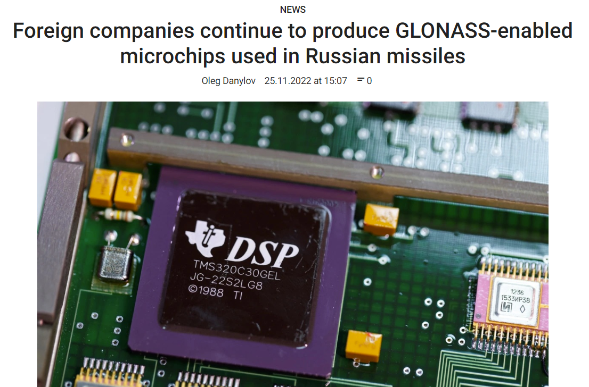
(이 기사는 서방의 대러시아 제재에도 불구하고 여전히 많은 서방 회사들이 GLONASS를 지원하는 chip들을 생산하고 있다는 우크라이나 정부의 폭로를 담은 것인데, 그 회사 목록에는 Broadcom이나 Qualcomm 같은 유명 미국 회사들도 포함됨. 그런데 사실 이들이 꼭 러시아에게 군용 chip을 공급한다는 소리는 아닌 것이, GPS처럼 GLONASS도 민간용으로도 많이 사용되기 때문에 평소부터 Broadcom이나 Qualcomm 같은 mobile chip 회사들은 그런 chip을 설계 생산하는 것이 당연하고, 전쟁이 났다고 갑자기 설계 변경을 할 수는 없음.) GPS는 간단하면서도 정확하다는 장점이 있지만 단점은 jamming과 spoofing이 너무 쉽다는 것. 최근 우크라이나에 공급된 HIMARS도 러샤군의 재밍에 명중률이 크게 떨어져 애로 사항이 많다고. 물론 그런 방해 공작에 대응하기 위한 수단도 존재하지만 그런 대응 수단을 다시 또 방해하는 것도 가능하므로 이건 끝나지 않는 숨바꼭질.
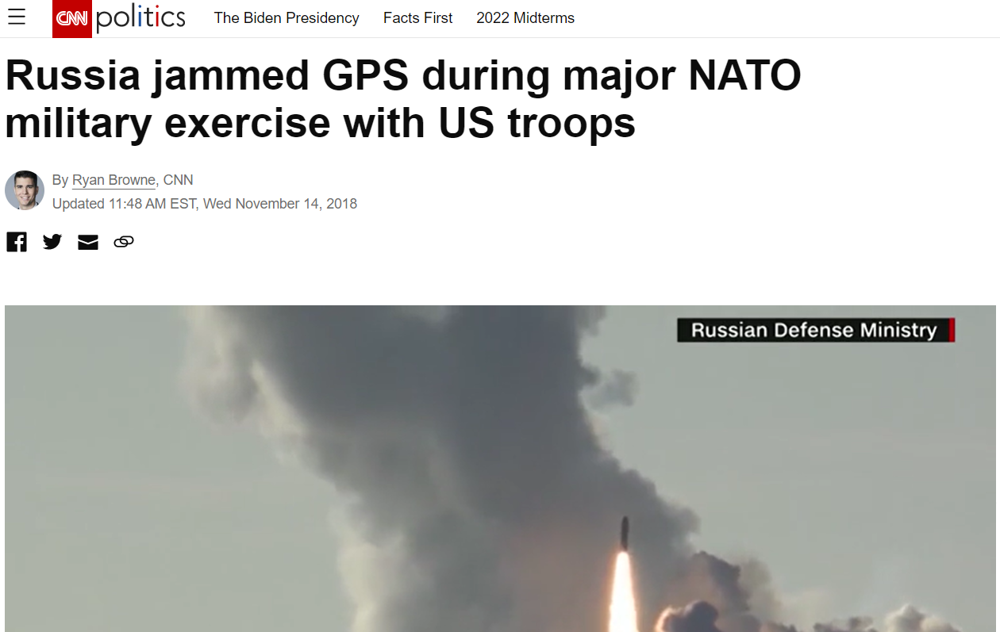
(사진은 2018년 10월 미군을 포함한 NATO군의 연합 훈련인 Trident Juncture가 노르웨이에서 벌어졌는데 이때 러시아가 GPS jamming을 한 것에 대해 NATO가 항의했다는 뉴스. 원본 기사는 https://edition.cnn.com/2018/11/14/politics/russia-nato-jamming/index.html에서 읽으시길)
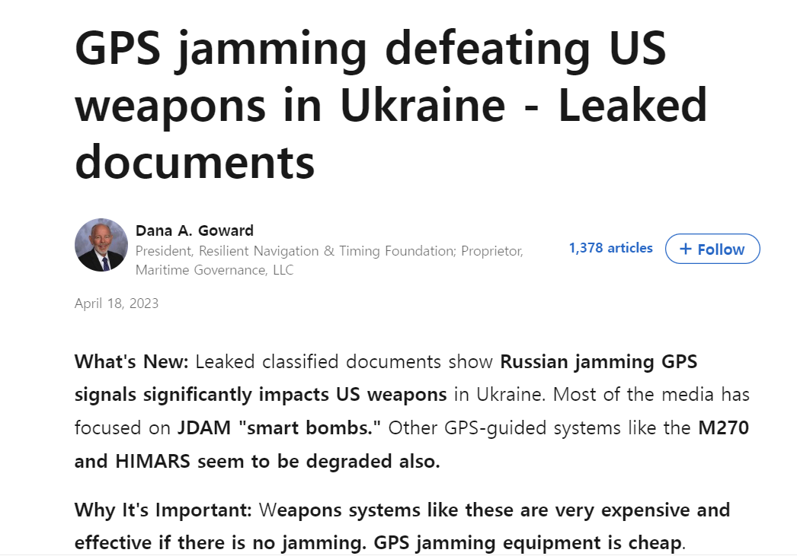
(우크라이나 전쟁에서도 러시아군의 GPS jamming이 골치라는 기사. 원문 기사는 https://www.politico.com/news/2023/04/12/russia-jamming-u-s-smart-bombs-in-ukraine-leaked-docs-say-00091600 그리고 https://www.politico.com/news/2023/04/12/russia-jamming-u-s-smart-bombs-in-ukraine-leaked-docs-say-00091600 등에서 읽으시길) 그럼에도 불구하고 전세계의 대부분의 군에서는 여전히 GPS를 사용. 이유는 여러가지가 있지만 가장 중요한 것은 그 어떤 것보다도 정확하고 빠르다는 것. GPS는 그냥 켜기만 하면 즉각 현재 위치를 1~2m 수준의 오차 범위 내에서 파악해줌. 그에 비해 자동천문항법 장치는 아무리 최신식이라고 해도 위치 파악에 5초 이상 걸리는데다 오차 범위도 GPS보다 훨씬 더 큼. 하지만 여전히 celestial navigation을 쓰는 것이 바로 SLBM. INS의 정밀도에 자신이 있다면 이론상 지상발사 ICBM은 정말 INS만으로도 충분히 목표물을 타격 가능. 그러나 잠수함에서 발사하는 SLBM은 일단 해저의 잠수함 자체가 자신의 현재 위치를 정말 정확하고 자신있게 말할 수 없는 상황인데다, 그나마 해류와 파도 등등으로 인해 잠수함도 그렇고 해수면 밖으로 박차고 날아가는 SLBM에도 INS 오차가 꽤 많이 발생할 수 밖에 없음. 그렇다고 지구 최후의 날에나 실전 발사될 SLBM의 유도를 재밍 당하기 딱 좋은 GPS에 의존할 수도 없는 노릇. 그때 사용되는 것이 바로 celestial navigation. 상대가 러시아든 중국이든 미국이든, 별들은 절대 인간의 힘으로 jamming 할 수도 없고 위조해낼 수도 없기 때문.
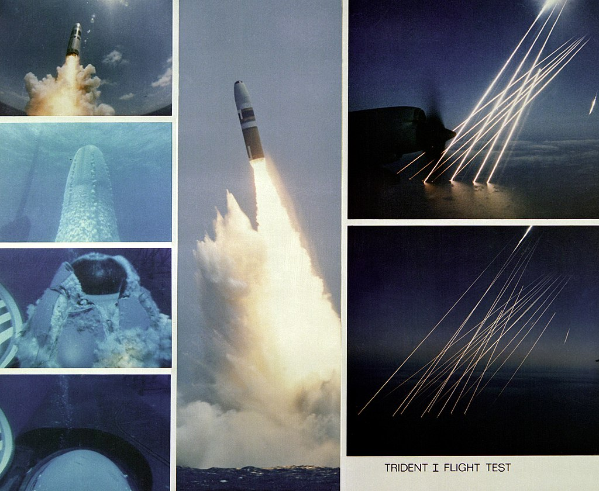
(1981년, USS Francis Scott Key에서 시험 발사된 Trident I C-4의 모습. 저 여러 줄기의 빛은 대서양에 떨어지는 Trident의 여러 개 탄두들(multiple independently targetable reentry vehicles, MIRV) 모습)
현대화된 자동 천문항법 장치는 크기가 가정용 전자렌지 정도이고, B-2 폭격기나 SLBM인 Trident 미쓸에 탑재된다고. 또 러시아의 Tu-95MS Bear-H 폭격기에도 자동화된 ANS-2009 celestial navigation system이 장착되어 있음. 열댓개의 대표적인 별들 중 하나에 이걸 고정시켜놓으면 현재 위치를 90m 이내의 오차로 자동 계산해준다고.
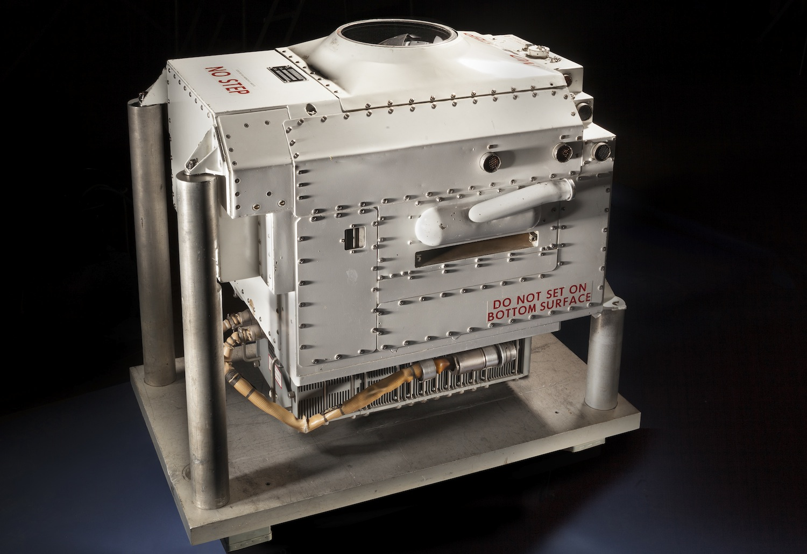
(앞선 포스팅에서 소개한 SM-62 Snark 순항 미쓸의 celestial navigation system 개발은 결코 헛된 것은 아니어서, 그 이후로도 계속 연구 개발이 진행되었고, 그 결과 만들어진 것이 Nortronics NAS-14V2 Astroinertial Navigation System. 정찰기와 폭격기는 물론 ICBM 등에도 사용됨. 지금은 이것도 골동품으로 박물관에 전시됨.)
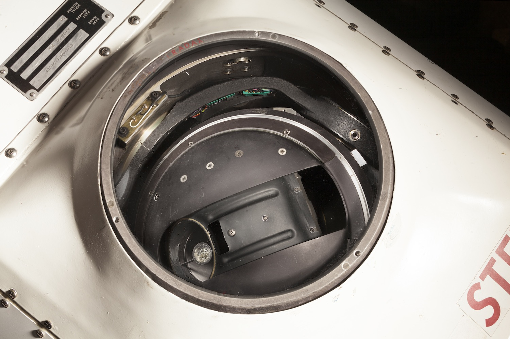
(NAS-14V2 Astroinertial Navigation System의 망원경. 3개의 축을 가진 짐벌들로 만들어진 플랫폼에 마운트된 것이 보임)
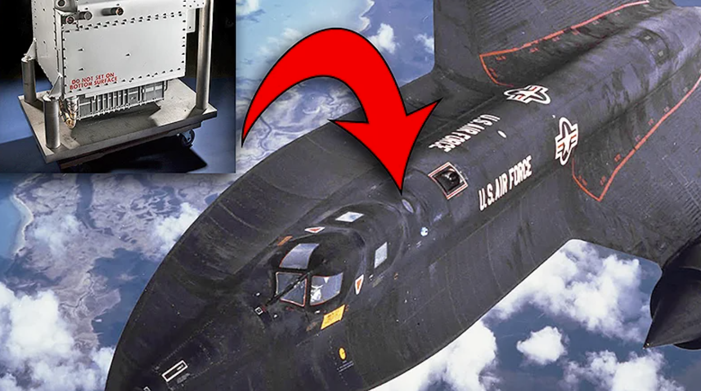
(초고속 정찰기 SR-71에 들어가는 NAS-14V2의 그 위치. 조종석 뒤쪽에 위치하기 때문에 스타워즈에서 X-wing 전투기 조종석 뒤쪽에 탑재되는 R2-D2에 빗대어 실제로도 별명이 R2-D2였다고.)
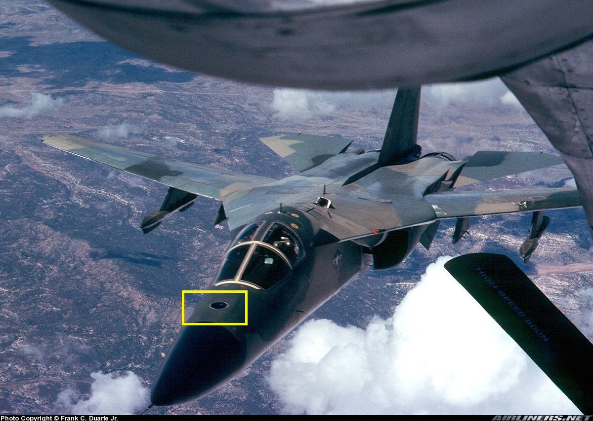
(FB-111의 경우는 일부 모델에 저렇게 조종석 앞 부분 콧잔등에 Litton ASQ-119 astro-tracker를 장착. 이는 모든 FB-111에 장착된 것은 아니고 특별 장거리 임무를 위한 기종에만 장착.)
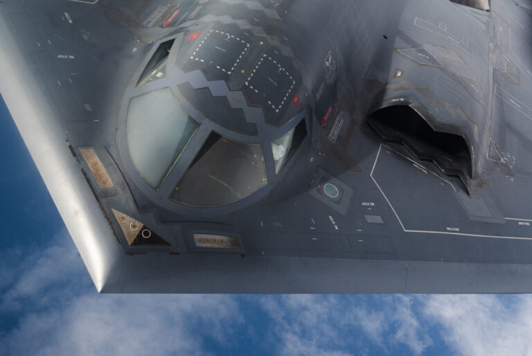
(스텔스 폭격기 B-2의 Astroinertial Navigation System의 둥근 하늘색 port가 조종석 왼쪽에 보임)